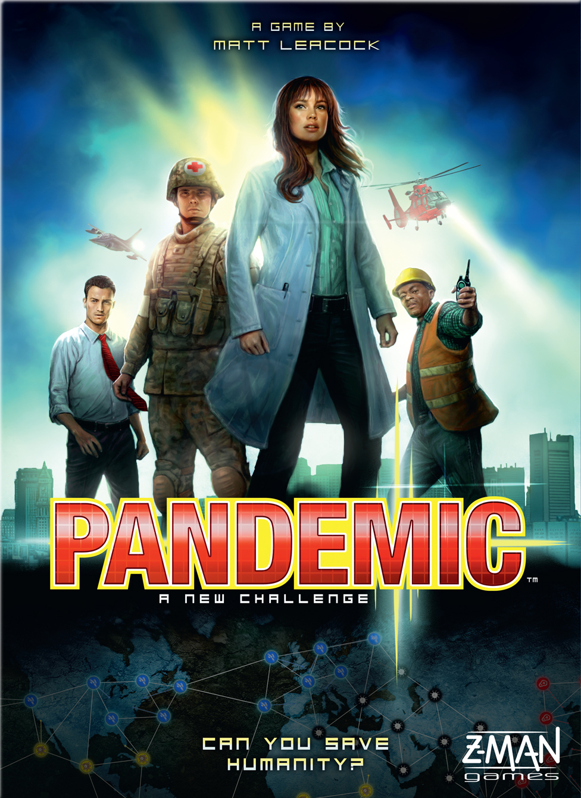
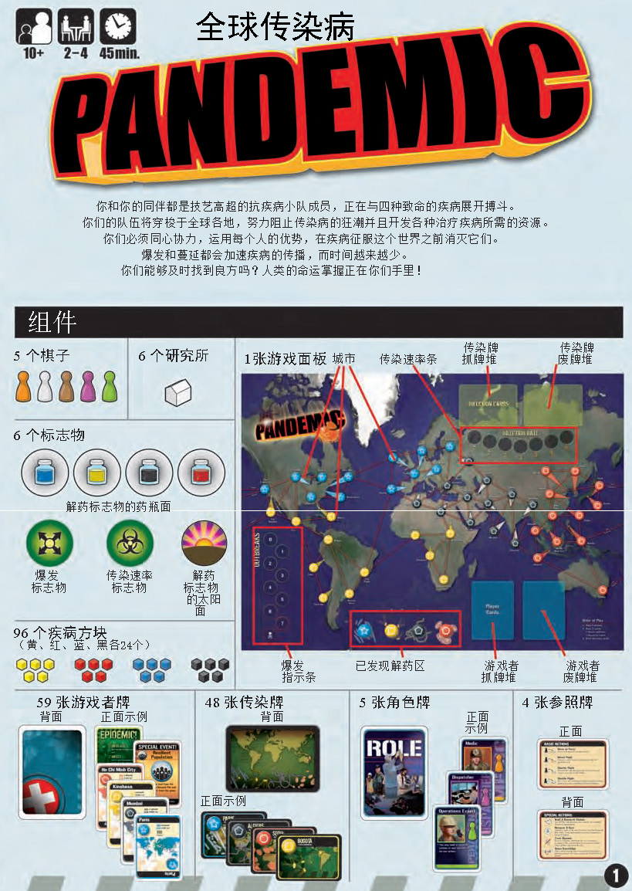
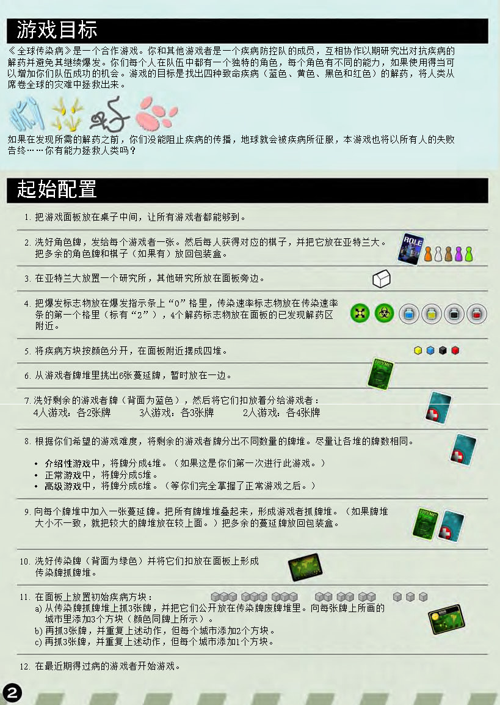
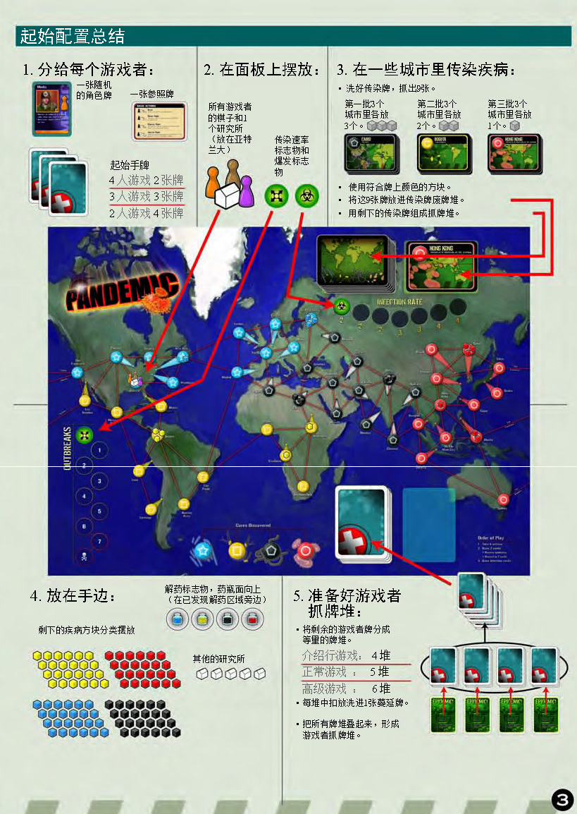
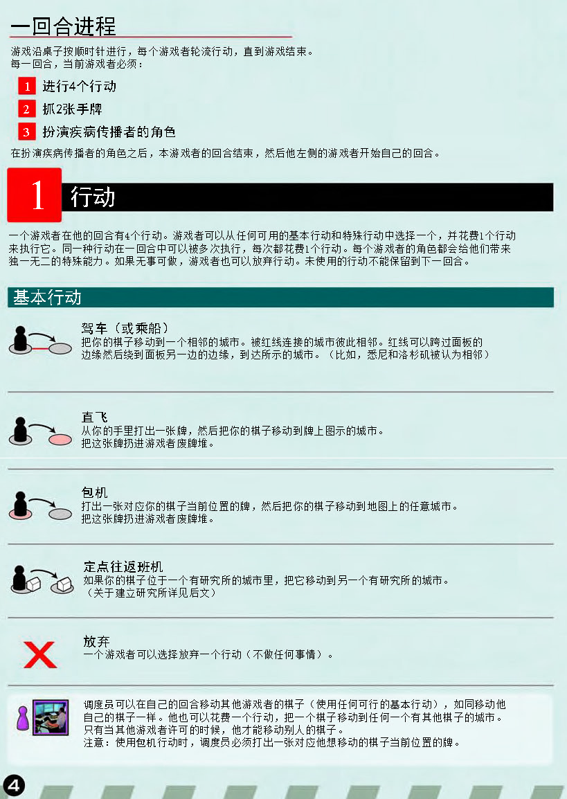
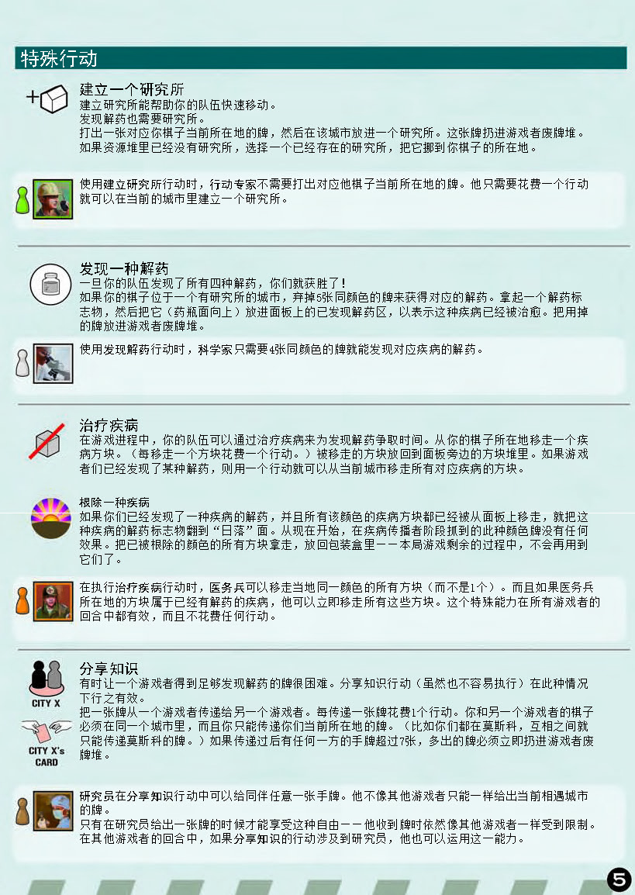
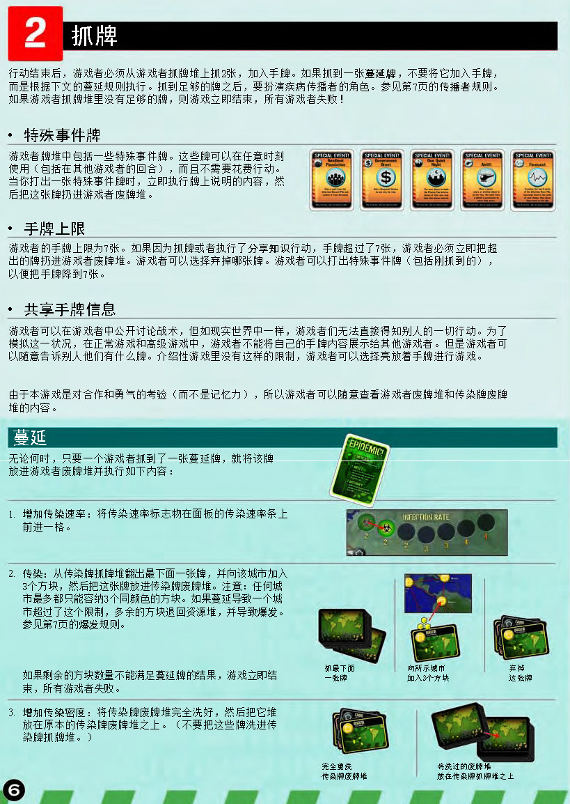
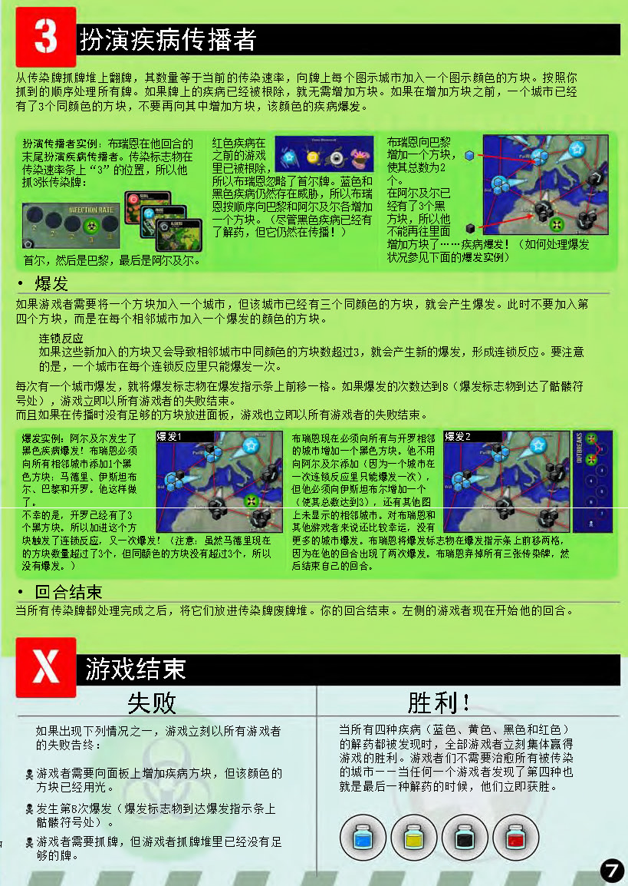
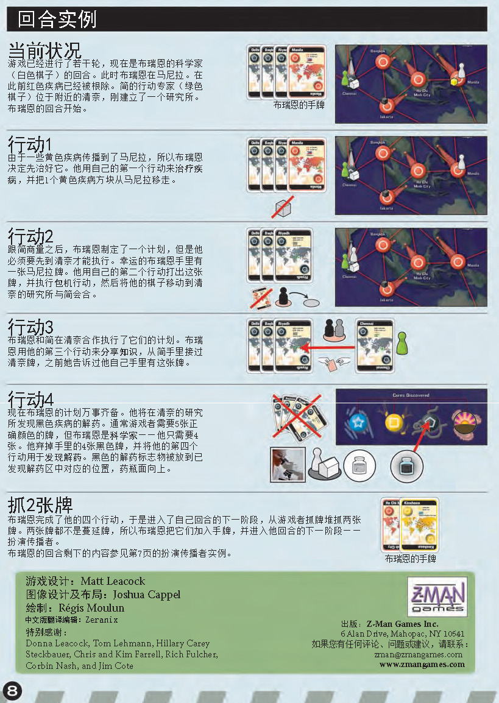

瘟疫危机
Pandemic · 官方中文规则书全文转录

本页整理自《瘟疫危机》（Pandemic）官方中文规则书（Matt Leacock 设计，Z-Man Games 出版），共 8 页正文逐页转录，并在对应章节嵌入原书扫描页供对照。内容涵盖游戏简介与组件、游戏目标、起始配置、回合流程、基本与特殊行动（含角色能力边栏）、抓牌与蔓延、疾病传播者与爆发、游戏结束条件及回合实例。规则内容归原作方所有，转录仅供个人学习查阅。
整理说明：原书个别排印笔误已径改（如「掌握正在你们手里」→「掌握在你们手里」、「介绍行游戏」→「介绍性游戏」、「游戏中公开讨论」等）；原书页面边栏的角色能力说明已并入对应行动的引注框。
游戏简介与组件

你和你的同伴都是技艺高超的抗疾病小队成员，正在与四种致命的疾病展开搏斗。你们的队伍将穿梭于全球各地，努力阻止传染病的狂潮并且开发各种治疗疾病所需的资源。你们必须同心协力，运用每个人的优势，在疾病征服这个世界之前消灭它们。爆发和蔓延都会加速疾病的传播，而时间越来越少。你们能够及时找到良方吗？人类的命运掌握在你们手里！
组件（10+ 岁 · 2–4 人 · 约 45 分钟）：
- 5 个棋子
- 6 个研究所
- 6 个标志物：解药标志物（药瓶面／太阳面）、爆发标志物、传染速率标志物
- 96 个疾病方块（黄、红、蓝、黑各 24 个）
- 1 张游戏面板（含城市、传染速率条、传染牌抓牌堆／废牌堆、爆发指示条、已发现解药区、游戏者抓牌堆／废牌堆等标注）
- 59 张游戏者牌
- 48 张传染牌
- 5 张角色牌
- 4 张参照牌
游戏目标

《全球传染病》是一个合作游戏。你和其他游戏者是一个疾病防控队的成员，互相协作以期研究出对抗疾病的解药并避免其继续爆发。你们每个人在队伍中都有一个独特的角色，每个角色有不同的能力，如果使用得当可以增加你们队伍成功的机会。游戏的目标是找出四种致命疾病（蓝色、黄色、黑色和红色）的解药，将人类从席卷全球的灾难中拯救出来。
如果在发现所需的解药之前，你们没能阻止疾病的传播，地球就会被疾病所征服，本游戏也将以所有人的失败告终……你们有能力拯救人类吗？
起始配置
- 把游戏面板放在桌子中间，让所有游戏者都能够到。
- 洗好角色牌，发给每个游戏者一张。然后每人获得对应的棋子，并把它放在亚特兰大。把多余的角色牌和棋子（如果有）放回包装盒。
- 在亚特兰大放置一个研究所，其他研究所放在面板旁边。
- 把爆发标志物放在爆发指示条上「0」格里，传染速率标志物放在传染速率条的第一个格里（标有「2」），4 个解药标志物放在面板的已发现解药区附近。
- 将疾病方块按颜色分开，在面板附近摆成四堆。
- 从游戏者牌堆里挑出 6 张蔓延牌，暂时放在一边。
- 洗好剩余的游戏者牌（背面为蓝色），然后将它们扣放着分给游戏者：
- 4 人游戏：各 2 张牌
- 3 人游戏：各 3 张牌
- 2 人游戏：各 4 张牌
- 根据你们希望的游戏难度，将剩余的游戏者牌分出不同数量的牌堆。尽量让各堆的牌数相同。
- 介绍性游戏中，将牌分成 4 堆。（如果这是你们第一次进行此游戏。）
- 正常游戏中，将牌分成 5 堆。
- 高级游戏中，将牌分成 6 堆。（等你们完全掌握了正常游戏之后。）
- 向每个牌堆中加入一张蔓延牌。把所有牌堆堆叠起来，形成游戏者抓牌堆。（如果牌堆大小不一致，就把较大的牌堆放在较上面。）把多余的蔓延牌放回包装盒。
- 洗好传染牌（背面为绿色）并将它们扣放在面板上形成传染牌抓牌堆。
- 在面板上放置初始疾病方块：
- a) 从传染牌抓牌堆上抓 3 张牌，并把它们公开放在传染牌废牌堆里。向每张牌上所画的城市里添加 3 个方块（颜色同牌上所示）。
- b) 再抓 3 张牌，并重复上述动作，但每个城市添加 2 个方块。
- c) 再抓 3 张牌，并重复上述动作，但每个城市添加 1 个方块。
- 在最近期得过病的游戏者开始游戏。
起始配置总结

本页为原书的速查总结页，与上节「起始配置」内容一致。
1. 分给每个游戏者：一张随机的角色牌、一张参照牌，以及起始手牌（4 人游戏各 2 张牌；3 人游戏各 3 张牌；2 人游戏各 4 张牌）。
2. 在面板上摆放：所有游戏者的棋子和 1 个研究所（放在亚特兰大），以及传染速率标志物和爆发标志物。
3. 在一些城市里传染疾病：洗好传染牌，抓出 9 张——第一批 3 个城市里各放 3 个，第二批 3 个城市里各放 2 个，第三批 3 个城市里各放 1 个；使用符合牌上颜色的方块；将这 9 张牌放进传染牌废牌堆，用剩下的传染牌组成抓牌堆。
4. 放在手边：剩下的疾病方块分类摆放；解药标志物，药瓶面向上（在已发现解药区域旁边）；其他的研究所。
5. 准备好游戏者抓牌堆：将剩余的游戏者牌分成等量的牌堆（介绍性游戏 4 堆、正常游戏 5 堆、高级游戏 6 堆），每堆中扣放洗进 1 张蔓延牌，然后把所有牌堆叠起来，形成游戏者抓牌堆。
一回合进程

游戏沿桌子按顺时针进行，每个游戏者轮流行动，直到游戏结束。每一回合，当前游戏者必须：
- 进行 4 个行动
- 抓 2 张手牌
- 扮演疾病传播者的角色
在扮演疾病传播者的角色之后，本游戏者的回合结束，然后他左侧的游戏者开始自己的回合。
1. 行动
一个游戏者在他的回合有 4 个行动。游戏者可以从任何可用的基本行动和特殊行动中选择一个，并花费 1 个行动来执行它。同一种行动在一回合中可以被多次执行，每次都花费 1 个行动。每个游戏者的角色都会给他们带来独一无二的特殊能力。如果无事可做，游戏者也可以放弃行动。未使用的行动不能保留到下一回合。
基本行动：
- 驾车（或乘船）：把你的棋子移动到一个相邻的城市。被红线连接的城市彼此相邻。红线可以跨过面板的边缘然后绕到面板另一边的边缘，到达所示的城市。（比如，悉尼和洛杉矶被认为相邻。）
- 直飞：从你的手里打出一张牌，然后把你的棋子移动到牌上图示的城市。把这张牌扔进游戏者废牌堆。
- 包机：打出一张对应你的棋子当前位置的牌，然后把你的棋子移动到地图上的任意城市。把这张牌扔进游戏者废牌堆。
- 定点往返班机：如果你的棋子位于一个有研究所的城市里，把它移动到另一个有研究所的城市。（关于建立研究所详见后文。）
- 放弃：一个游戏者可以选择放弃一个行动（不做任何事情）。
调度员：可以在自己的回合移动其他游戏者的棋子（使用任何可行的基本行动），如同移动他自己的棋子一样。他也可以花费 1 个行动，把一个棋子移动到任何一个有其他棋子的城市。只有当其他游戏者许可的时候，他才能够移动别人的棋子。
注意：使用包机行动时，调度员必须打出一张对应他想移动的棋子当前位置的牌。
特殊行动

建立一个研究所
建立研究所能帮助你的队伍快速移动，发现解药也需要研究所。打出一张对应你棋子当前所在地的牌，然后在该城市放进一个研究所。这张牌扔进游戏者废牌堆。如果资源堆里已经没有研究所，选择一个已经存在的研究所，把它挪到你棋子的所在地。
行动专家：使用建立研究所行动时，行动专家不需要打出对应他棋子当前所在地的牌。他只需要花费一个行动就可以在当前的城市里建立一个研究所。
发现一种解药
一旦你的队伍发现了所有四种解药，你们就获胜了！如果你的棋子位于一个有研究所的城市，弃掉 5 张同颜色的牌来获得对应的解药。拿起一个解药标志物，然后把它（药瓶面向上）放进面板上的已发现解药区，以表示这种疾病已经被治愈。把用掉的牌放进游戏者废牌堆。
科学家：使用发现解药行动时，科学家只需要 4 张同颜色的牌就能发现对应疾病的解药。
治疗疾病
在游戏进程中，你的队伍可以通过治疗疾病来为发现解药争取时间。从你的棋子所在地移走一个疾病方块。（每移走一个方块花费一个行动。）被移走的方块放回到面板旁边的方块堆里。如果游戏者们已经发现了某种解药，则用一个行动就可以从当前城市移走所有对应疾病的方块。
根除一种疾病
如果你们已经发现了一种疾病的解药，并且所有该颜色的疾病方块都已经从面板上移走，就把这种疾病的解药标志物翻到「日落」面。从现在开始，在疾病传播者阶段抓到的此种颜色牌没有任何效果。把已被根除的颜色的所有方块拿走，放回包装盒里——本局游戏剩余的过程中，不会再用到它们了。
医务兵：在执行治疗疾病行动时，医务兵可以移走当地同一颜色的所有方块（而不是 1 个）。而且如果医务兵所在地的方块属于已经有解药的疾病，他可以立即移走所有这些方块。这个特殊能力在所有游戏者的回合中都有效，而且不花费任何行动。
分享知识
有时让一个游戏者得到足够发现解药的牌很困难。分享知识行动（虽然也不容易执行）在此种情况下行之有效。把一张牌从一个游戏者传递给另一个游戏者，每传递一张牌花费 1 个行动。你和另一个游戏者的棋子必须在同一个城市里，而且你只能传递你们当前所在地的牌。（比如你们都在莫斯科，互相之间就只能传递莫斯科的牌。）如果传递过后有任何一方的手牌超过 7 张，多出的牌必须立即扔进游戏者废牌堆。
研究员：在分享知识行动中可以给同伴任意一张手牌，而不像其他游戏者一样只能给出当前相遇城市的牌。只有在研究员给出一张牌的时候才能享受这种自由——他收到牌时依然像其他游戏者一样受到限制。在其他游戏者的回合中，如果分享知识的行动涉及到研究员，他也可以运用这一能力。
抓牌（每个回合的第 2 步）

行动结束后，游戏者必须从游戏者抓牌堆上抓 2 张，加入手牌。如果抓到一张蔓延牌，不要将它加入手牌，而是根据下文的蔓延规则执行。抓到足够的牌之后，要扮演疾病传播者的角色。如果游戏者抓牌堆里没有足够的牌，则游戏立即结束，所有游戏者失败！
特殊事件牌
游戏者牌堆中包括一些特殊事件牌。这些牌可以在任意时刻使用（包括在其他游戏者的回合），而且不需要花费行动。当你打出一张特殊事件牌时，立即执行牌上说明的内容，然后把这张牌扔进游戏者废牌堆。
手牌上限
游戏者的手牌上限为 7 张。如果因为抓牌或者执行了分享知识行动，手牌超过了 7 张，游戏者必须立即把超出的牌扔进游戏者废牌堆。游戏者可以选择弃掉哪张牌。游戏者可以打出特殊事件牌（包括刚抓到的），以便把手牌降到 7 张。
共享手牌信息
游戏者可以在游戏中公开讨论战术，但如现实世界中一样，游戏者们无法直接得知别人的一切行动。为了模拟这一状况，在正常游戏和高级游戏中，游戏者不能将自己的手牌内容展示给其他游戏者。但是游戏者可以随意告诉别人他们有什么牌。介绍性游戏里没有这样的限制，游戏者可以选择亮放着的手牌进行游戏。由于本游戏是对合作和勇气的考验（而不是记忆力），所以游戏者可以随意查看游戏者废牌堆和传染牌废牌堆的内容。
蔓延
无论何时，只要一个游戏者抓到了一张蔓延牌，就将该牌放进游戏者废牌堆并执行如下内容：
- 增加传染速率：将传染速率标志物在面板的传染速率条上前进一格。
- 传染：从传染牌抓牌堆翻出最下面一张牌，并向该城市加入 3 个方块，然后把这张牌放进传染牌废牌堆。注意：任何城市最多都只能容纳 3 个同颜色的方块。如果蔓延导致一个城市超过了这个限制，多余的方块退回资源堆，并导致爆发。如果剩余的方块数量不能满足蔓延牌的结果，游戏立即结束，所有游戏者失败。
- 增加传染密度：将传染牌废牌堆完全洗好，然后把它堆放在原本的传染牌抓牌堆之上。（不要把这些牌洗进传染牌抓牌堆。）
扮演疾病传播者（每个回合的第 3 步）

从传染牌抓牌堆上翻牌，其数量等于当前的传染速率，向牌上每个图示城市加入一个图示颜色的方块。按照你抓到的顺序处理所有牌。如果牌上的疾病已经被根除，就无需增加方块。如果在增加方块之前，一个城市已经有了 3 个同颜色的方块，不要再向其中增加方块，该颜色的疾病爆发。
扮演传播者实例：布瑞恩在他回合的末尾扮演疾病传播者。传染标志物在传染速率条上「3」的位置，所以他抓 3 张传染牌：首尔，然后是巴黎，最后是阿尔及尔。红色疾病在之前的游戏里已经被根除，所以布瑞恩忽略了首尔牌。蓝色和黑色疾病仍然存在威胁，所以布瑞恩按顺序向巴黎和阿尔及尔各增加一个方块。（尽管黑色疾病已经有了解药，但它仍然在传播！）布瑞恩向巴黎增加一个方块，使其总数为 2 个。在阿尔及尔已经有了 3 个黑方块，所以他不能再往里面增加方块了……疾病爆发！（如何处理爆发状况参见下面的爆发实例。）
爆发
如果一个游戏者需要将一个方块加入一个城市，但该城市已经有三个同颜色的方块，就会产生爆发。此时不要加入第四个方块，而是在每个相邻城市加入一个爆发的颜色的方块。
连锁反应：如果这些新加入的方块又会导致相邻城市中同颜色的方块数超过 3，就会产生新的爆发，形成连锁反应。要注意的是，一个城市在每个连锁反应里只能爆发一次。
每次有一个城市爆发，就将爆发标志物在爆发指示条上前移一格。如果爆发的次数达到 8（爆发标志物到达了骷髅符号处），游戏立即以所有游戏者的失败结束。而且如果在传播时没有足够的方块放进面板，游戏也立即以所有游戏者的失败结束。
爆发实例：阿尔及尔发生了黑色疾病爆发！布瑞恩必须向所有相邻城市添加 1 个黑色方块：马德里、伊斯坦布尔、巴黎和开罗。他这样做了。不幸的是，开罗已经有了 3 个黑方块，所以加进这个方块触发了连锁反应，又一次爆发！（注意：虽然马德里现在的方块数量超过了 3 个，但同颜色的方块没有超过 3 个，所以没有爆发。）布瑞恩现在必须向所有与开罗相邻的城市增加一个黑色方块。他不用向阿尔及尔添加（因为一个城市在一次连锁反应里只能爆发一次），但他必须向伊斯坦布尔增加一个（使其总数达到 3）。还有其他图上未显示的相邻城市。对布瑞恩和其他游戏者来说还比较幸运，没有更多的城市爆发。布瑞恩将爆发标志物在爆发指示条上前移两格，因为在他的回合出现了两次爆发。布瑞恩弃掉所有三张传染牌，然后结束自己的回合。
回合结束
当所有传染牌都处理完成之后，将它们放进传染牌废牌堆。你的回合结束，左侧的游戏者现在开始他的回合。
游戏结束
失败
如果出现下列情况之一，游戏立刻以所有游戏者的失败告终：
- 游戏者需要向面板上增加疾病方块，但该颜色的方块已经用光。
- 发生第 8 次爆发（爆发标志物到达爆发指示条上骷髅符号处）。
- 游戏者需要抓牌，但游戏者抓牌堆里已经没有足够的牌。
胜利！
当所有四种疾病（蓝色、黄色、黑色和红色）的解药都被发现时，全部游戏者立刻集体赢得游戏的胜利。游戏者们不需要治愈所有被传染的城市——当任何一个游戏者发现了第四种也就是最后一种解药的时候，他们立即获胜。
回合实例

当前状况
游戏已经进行了若干轮，现在是布瑞恩的科学家（白色棋子）的回合。此时布瑞恩在马尼拉，在此前红色疾病已经被根除。简的行动专家（绿色棋子）位于附近的清奈，刚建立了一个研究所。布瑞恩的回合开始。
行动 1
由于一些黄色疾病传播到了马尼拉，所以布瑞恩决定先治好它。他用自己的第一个行动来治疗疾病，并把 1 个黄色疾病方块从马尼拉移走。
行动 2
跟简商量之后，布瑞恩制定了一个计划，但是他必须要先到清奈才能执行。幸运的布瑞恩手里有一张马尼拉牌。他用自己的第二个行动打出这张牌，并执行包机行动，然后将他的棋子移动到清奈的研究所与简会合。
行动 3
布瑞恩和简在清奈合作执行了他们的计划。布瑞恩用他的第三个行动来分享知识，从简手里接过清奈牌，之前她告诉过他自己手里有这张牌。
行动 4
现在布瑞恩的计划万事齐备。他将在清奈的研究所发现黑色疾病的解药。通常游戏者需要 5 张正确颜色的牌，但布瑞恩是科学家——他只需要 4 张。他弃掉手里的 4 张黑色牌，并将他的第四个行动用于发现解药。黑色的解药标志物被放到已发现解药区中对应的位置，药瓶面向上。
抓 2 张牌
布瑞恩完成了他的四个行动，于是进入了自己回合的下一阶段，从游戏者抓牌堆抓两张牌。两张牌都不是蔓延牌，所以布瑞恩将它们加入手牌，并进入他回合的下一阶段——扮演传播者。布瑞恩的回合剩下的内容参见第 7 页的扮演传播者实例。
游戏设计：Matt Leacock · 图像设计及布局：Joshua Cappel · 绘制：Régis Moulun · 中文版翻译编辑：Zeranix · 出版：Z-Man Games Inc.（www.zmangames.com）